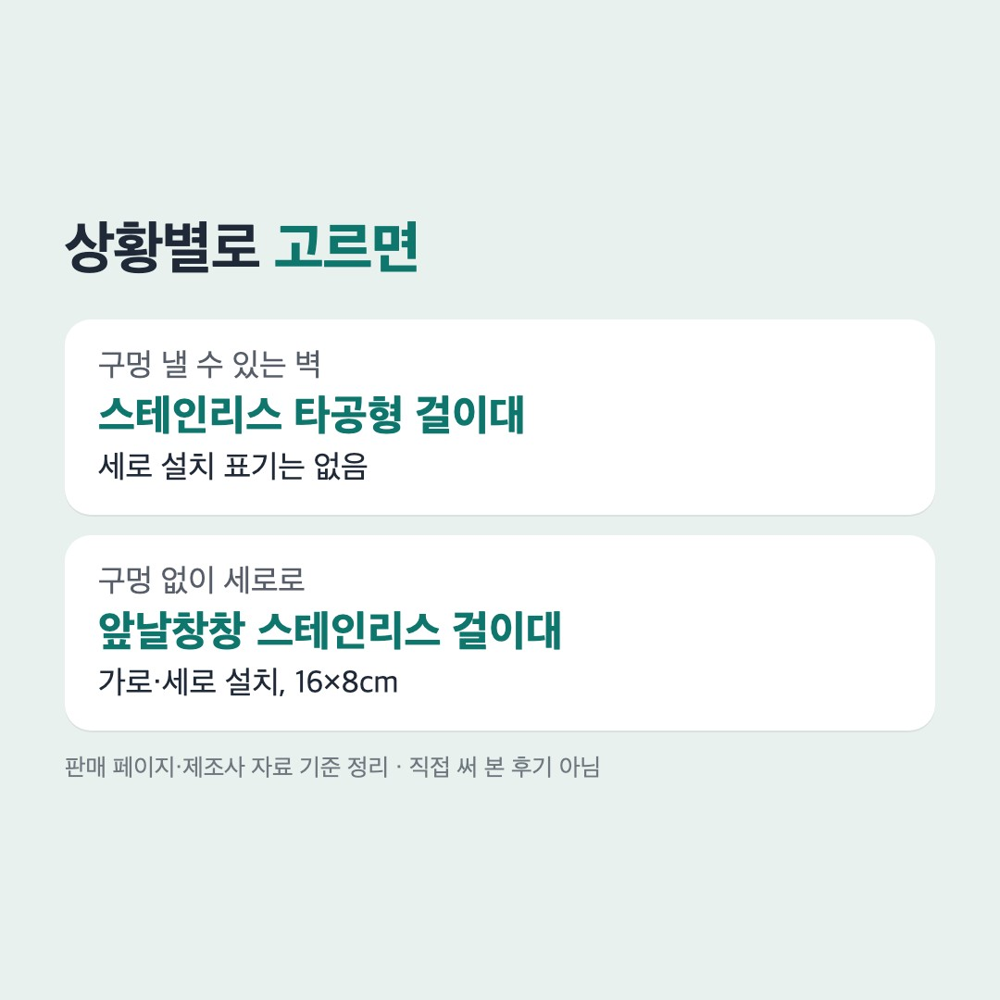

이 게시물은 쿠팡 파트너스 활동의 일환으로, 이에 따른 일정액의 수수료를 제공받습니다.
세로 타공 휴지걸이, 달기 전에 못 정한 것 2가지
휴지걸이를 세로로 달고 싶은데 벽에 구멍을 낼지 망설이는 집이라면, 답이 둘로 나뉘어요.
상세 이미지 글자를 옮겨 보니 타공형은 방향 표기가 없고, 붙이는 형에는 있었어요.


타공형 휴지걸이는 어떻게 다나요?
비교 글에 넣은 타공형 걸이는 상세에 설치 순서가 4단계로 나와 있어요.
- 위치를 정하고 드라이버로 구멍 뚫기
- 해머로 앵커를 벽에 고정
- 앵커 위에 베이스를 놓고 나사로 고정
- 스탠드를 베이스에 부착
걸이 크기는 9.1×5.5×16cm, 재질은 스테인리스예요.
견디는 무게 수치는 없어요.
타공형을 세로로 달아도 되나요?
상세에서 설치 방향에 대한 문구는 찾지 못했어요. 그래서 된다고도, 안 된다고도 쓸 수 없어요.
세로로 달 계획이라면 주문 전에 판매자에게 물어보세요.
나사 간격도 상세에 없어요.
떼어 낸 걸이의 구멍을 다시 쓰고 싶다면 이 간격도 같이 물어볼 거리예요.

구멍 없이 세로로 달 수 있는 건 없나요?
앞날창창 스테인리스 걸이대는 가로·세로 둘 다 설치할 수 있다고 적혀 있어요. 크기는 16×8cm예요.
상세에는 타일, 유리, 대리석, 금속처럼 매끄럽고 평평한 면에 맞는다고 나와요.
벽지, 페인트 벽, 울퉁불퉁한 벽은 부착력이 약할 수 있다고 하고요.
붙이는 순서는 벽면 닦기, 보호필름 떼기, 붙이기, 시간이 흐른 뒤 사용이에요. 기다릴 시간은 숫자가 없어요.
습기와 물기가 많은 곳에서는 접착력이 떨어질 수 있으니 고정 상태를 주기적으로 보라는 문구도 있어요.
결국 먼저 볼 건 벽이에요.
벽에 구멍을 낼 수 있는지, 판매자가 안내하는 설치 조건이 우리 집 벽과 맞는지부터 보면 돼요.
세 가지 걸이를 나란히 놓은 비교 글도 있어요.
https://blog.naver.com/darri06/224469946316
설치 순서와 치수는 11월 6일 상세 이미지에서 옮긴 내용이에요. 벽에 직접 달아 본 건 아니라서, 버티는 힘은 말할 수 없어요.
#세로휴지걸이 #타공휴지걸이 #화장실휴지걸이 #휴지걸이교체 #욕실용품